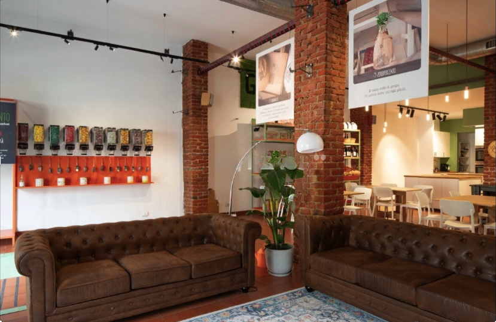
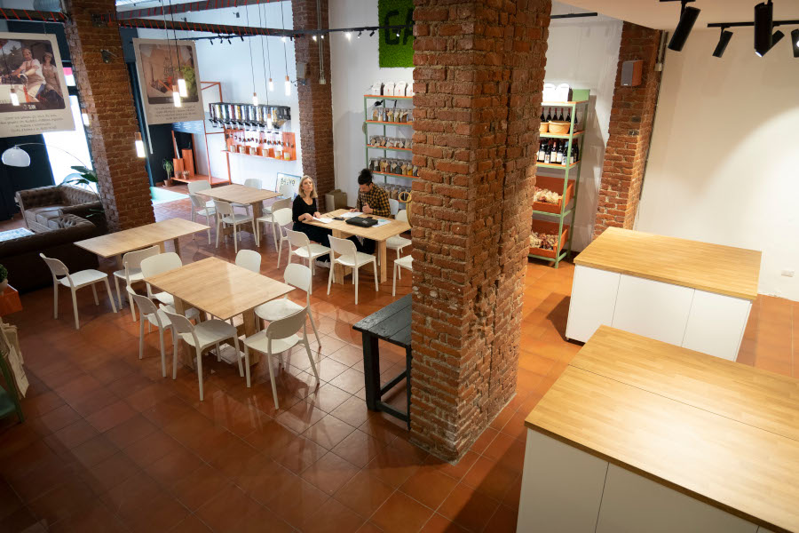
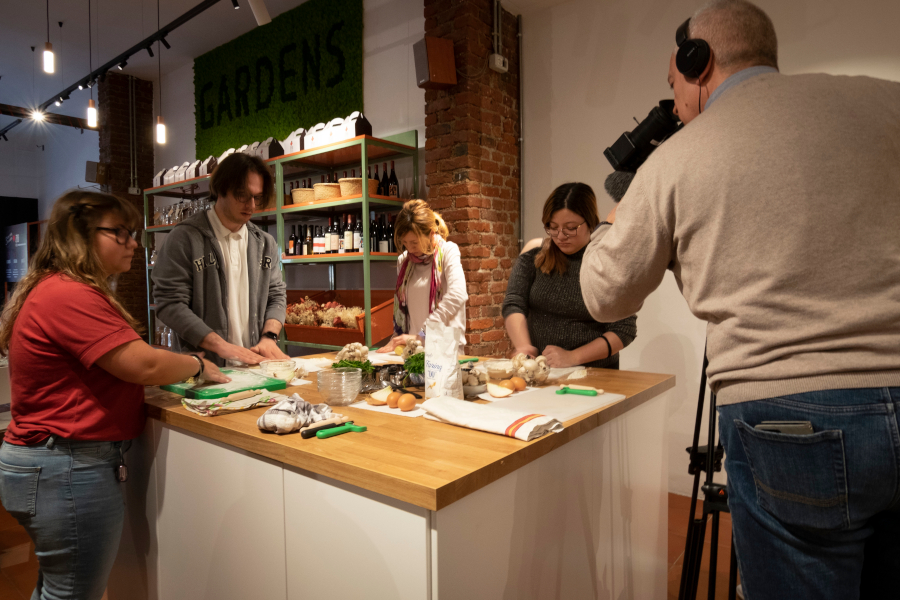
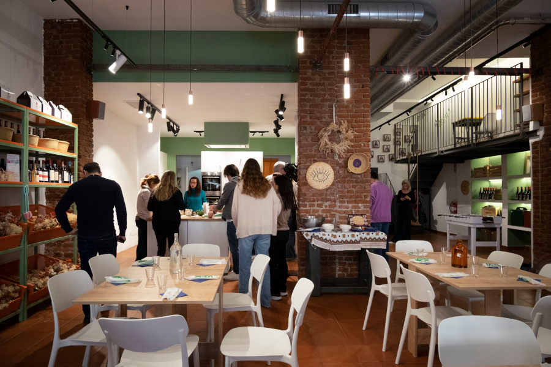

La zona di Paolo Sarpi è multiculturale da prima che il termine diventasse di uso comune. La via principale è area pedonale, con laboratori, negozi d’arte, socialità diffusa ai tavolini di locali, ristoranti e chioschi.
Il Laboratorio Zeropercento nasce dove c’era la nostra bottega etica, di spezie e farine e alimenti, dall’oriente, dall’africa, oltreoceano atlantico o da cooperative agroecologiche italiane. Sempre nel nome della sostenibilità.
Lo spazio è stato rinnovato da poco: un grande open space, colonne di mattoni a vista, cucina professionale pensata a scopo didattico

L'ampio open space di 100 metri quadrati con cucina professionale per la didattica a vista. La capienza è per 80 persone, 60 quando tutte accomodate ai tavoli
Salottino nella zona di ingresso. Gli ambienti vengono allestiti in base alle esigenze
Vista sull'open space dal soppalco


L'illuminazione artificiale con faretti al soffitto regolabili consente un buona luce di base per i set fotografici
Le postazioni di preparazione cibi possono essere spostate e adattate per più corsisti
L'open space durante una presentazione con buffet